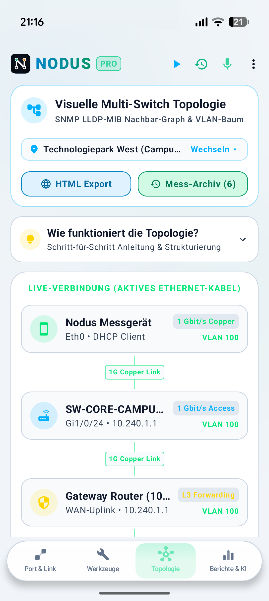
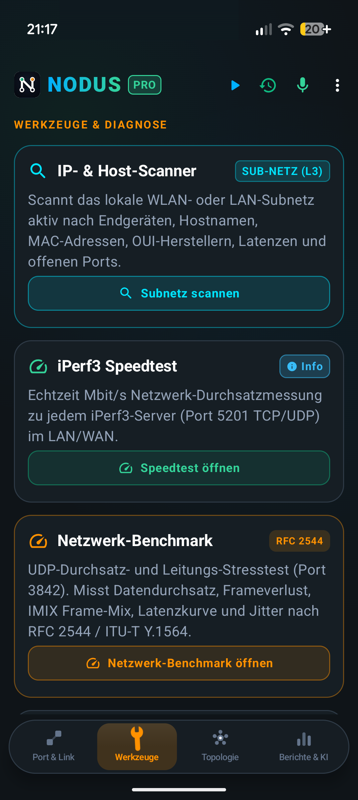
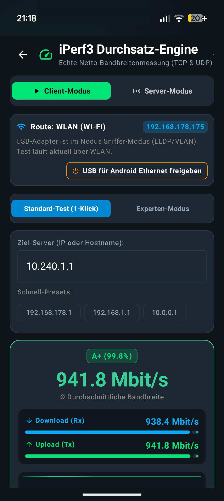
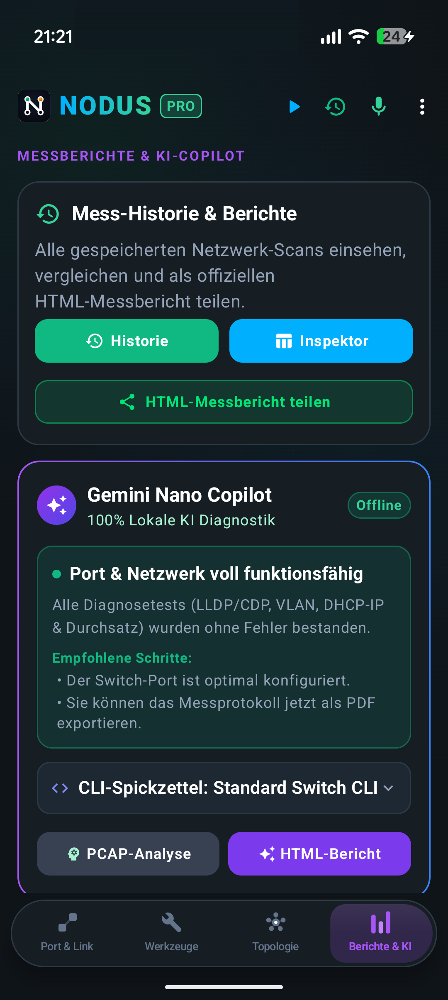
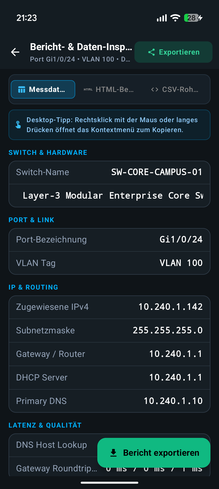

Android 8 oder neuer · USB-OTG · kein Root
Android 8 or newer · USB OTG · no root
Welcher Port ist das? Nodus weiß es.
Which port is this? Nodus knows.
Ein handelsüblicher USB-C-Ethernet-Adapter am Telefon, das Kabel in die Dose – und Sekunden später stehen Switch-Name, Port-ID, Management-IP und Native VLAN auf dem Display. Keine Patchfeld-Sucherei, kein Spezialgerät im Koffer, kein Root.
An ordinary USB-C Ethernet adapter on your phone, the cable in the wall socket — and seconds later the switch name, port ID, management IP and native VLAN are on your screen. No hunting through patch panels, no dedicated tester in a case, no root.






Was Nodus misst
What Nodus measures
Layer 2 statt nur Ping: die Informationen, für die sonst ein Spezialgerät nötig wäre.
Layer 2, not just ping: the information that usually requires dedicated hardware.
Switch- und Port-Erkennung
Switch and port discovery
Aus LLDP- und CDP-Frames liest Nodus Switch-Name, Modell, Port-Bezeichnung (etwa Gi1/0/24), Management-IP, Gerätefunktionen und das Native VLAN – direkt beim Verbindungsaufbau.
From LLDP and CDP frames Nodus reads switch name, model, port identifier (such as Gi1/0/24), management IP, device capabilities and the native VLAN — right as the link comes up.
802.1Q VLAN-Sniffer
802.1Q VLAN sniffer
Getaggte Frames auf der Leitung zeigen sofort, ob die Dose als Access- oder Trunk-Port konfiguriert ist – mit Live-Zählern und prozentualer Verteilung je VLAN.
Tagged frames on the wire immediately show whether an outlet is configured as access or trunk — with live counters and a percentage split per VLAN.
Multi-Switch-Topologie
Multi-switch topology
Nodus zeichnet den Weg vom Client über Access- und Core-Switch bis zum Gateway als interaktiven Baum – hilfreich für Dokumentation und Übergabe.
Nodus draws the path from client via access and core switch to the gateway as an interactive tree — useful for documentation and handover.
Durchsatz und Benchmark
Throughput and benchmarks
iPerf3 gegen jeden Standard-Server (Port 5201), dazu Stresstests nach RFC 2544 / ITU-T Y.1564 für Frame-Loss, Latenzkurven und Jitter.
iPerf3 against any standard server (port 5201), plus RFC 2544 / ITU-T Y.1564 stress tests for frame loss, latency curves and jitter.
PCAP für Wireshark
PCAP for Wireshark
Rohdatenmitschnitt im Standardformat .pcap über USB-C – zur späteren Analyse in Wireshark oder tcpdump, ohne Root-Rechte.
Raw capture in standard .pcap format over USB-C — for later analysis in Wireshark or tcpdump, without root.
KI-Copilot, komplett offline
AI copilot, fully offline
Der Copilot auf Basis von Gemini Nano erklärt DHCP-Aushandlung, IP-Konflikte und auffällige Frames – die Analyse läuft auf dem Chip des Telefons, nichts verlässt das Gerät.
The copilot based on Gemini Nano explains DHCP negotiation, IP conflicts and odd frames — the analysis runs on the phone's own chip, nothing leaves the device.
Port-Blinker
Port blinker
Gezielte Lastbursts bringen die LED am gesuchten Switch-Port zum Blinken. Ob das klappt, hängt von Switch und PHY-LED-Modus ab – deshalb ist die Funktion als Beta markiert.
Targeted traffic bursts make the LED on the port you're looking for blink. Whether that works depends on the switch and its PHY LED mode — which is why the feature is marked beta.
Multicast und Dienste
Multicast and services
mDNS-/Bonjour-Test über VLAN-Grenzen hinweg sowie Erreichbarkeits- und Latenzmessung für Standardports wie 80, 443, 22 und 3389.
mDNS/Bonjour testing across VLAN boundaries, plus reachability and latency checks for standard ports such as 80, 443, 22 and 3389.
Berichte zum Weitergeben
Reports you can hand over
Aus jeder Messung wird auf Wunsch ein sauberer PDF- oder HTML-Bericht für Ticketsystem, Abnahme oder Kundendokumentation.
Any measurement can become a clean PDF or HTML report for your ticketing system, acceptance test or client documentation.
Im Vergleich
In comparison
Warum ein Telefon plus 15-Euro-Adapter den Alltag abdeckt.
Why a phone plus a €15 adapter covers most days.
| KriteriumCriterion | Übliche Store-AppsTypical store apps | Spezial-MessgeräteDedicated testers | Nodus |
|---|---|---|---|
| Benötigte HardwareHardware needed | USB-LAN-AdapterUSB LAN adapter | Eigenes Gerät, 200–1.500 €Dedicated device, €200–1,500 | USB-C-LAN-Adapter, ca. 15 €USB-C LAN adapter, about €15 |
| Layer-2-Analyse (LLDP/CDP)Layer-2 analysis (LLDP/CDP) | nein, nur IP-Ebeneno, IP layer only | jayes | jayes |
| VLAN-Erkennung (802.1Q)VLAN detection (802.1Q) | neinno | jayes | jayes |
| PCAP / Wireshark | neinno | teilweisesometimes | jayes |
| iPerf3 & MessberichteiPerf3 & reports | selten, eingeschränktrare, limited | oft Aufpreisoften a paid add-on | eingebautbuilt in |
| Root nötigRoot required | neinno | — | neinno |
Nodus ersetzt kein zertifiziertes Kabelmessgerät: Dämpfung, NEXT oder Längenmessung bleiben Sache der Spezialhardware. Für Portsuche, VLAN-Klärung, DHCP- und Durchsatzfragen im Tagesgeschäft reicht das Telefon.
Nodus does not replace a certified cable tester: attenuation, NEXT and length measurements stay with dedicated hardware. For port hunting, VLAN questions, DHCP and throughput checks in daily work, the phone is enough.
Häufige Fragen
Frequent questions
Welche USB-Adapter funktionieren?Which USB adapters work?
Handelsübliche USB-C-auf-Gigabit-Ethernet-Adapter mit den verbreiteten Chipsätzen (Realtek RTL8152/8153, ASIX AX88179) sowie Standard-CDC-ECM- und CDC-NCM-Geräte. Genau dafür gibt es die dreitägige Testphase: probier deinen Adapter aus, bevor du kaufst.
Standard USB-C-to-gigabit-Ethernet adapters with the common chipsets (Realtek RTL8152/8153, ASIX AX88179) plus generic CDC-ECM and CDC-NCM devices. That's exactly what the three-day trial is for: try your adapter before you buy.
Brauche ich Root oder ein besonderes Telefon?Do I need root or a special phone?
Nein. Nodus läuft auf gewöhnlichen Android-Geräten ab Android 8 mit USB-OTG-Unterstützung und arbeitet ausschließlich über die regulären Android-USB-Schnittstellen. Tablets, Samsung DeX und Desktop-Modus werden mit angepasstem Layout unterstützt.
No. Nodus runs on ordinary Android devices from Android 8 with USB OTG support, using only the regular Android USB APIs. Tablets, Samsung DeX and desktop mode are supported with an adapted layout.
Wie unterscheidet sich Nodus von anderen Netzwerk-Apps?How is Nodus different from other network apps?
Die meisten Apps arbeiten auf Layer 3 und 4: Ping, Portscan, IP-Rechner. Nodus setzt eine Ebene tiefer an und wertet die Frames aus, die der Switch selbst schickt. Deshalb kann es Port-Bezeichnung, VLAN-Tags und Topologie zeigen statt nur Erreichbarkeit.
Most apps operate at layers 3 and 4: ping, port scan, subnet calculator. Nodus works one layer below and evaluates the frames the switch itself sends. That's why it can show port identifiers, VLAN tags and topology instead of just reachability.
Was passiert mit meinen Messdaten?What happens to my measurements?
Sie bleiben auf dem Gerät. Die App braucht für die Messung keine Internetverbindung; Lizenz- und Update-Prüfung übertragen nur eine anonymisierte Geräte-Prüfsumme und die Versionsnummer. Ein Google-Drive-Backup gibt es nur, wenn du es selbst einschaltest. Details stehen in der Datenschutzerklärung.
They stay on the device. Measuring needs no internet connection; the licence and update check only transmits an anonymised device checksum and the version number. A Google Drive backup exists only if you switch it on yourself. Details are in the privacy policy.
Ersetzt Nodus mein Profi-Messgerät?Does Nodus replace my professional tester?
Für den größten Teil der täglichen Fragen im Service und bei der Inbetriebnahme: ja. Welcher Switch-Port ist das, welches VLAN liegt an, kommt DHCP durch, stimmt der Durchsatz – dafür brauchst du keinen Gerätekoffer mehr. Für Zertifizierungsmessungen an der Verkabelung weiterhin nein.
For most day-to-day service and commissioning questions: yes. Which switch port is this, which VLAN is live, does DHCP come through, is throughput right — you no longer need a case full of hardware for that. For certification measurements on the cabling itself: still no.
Drei Tage ausprobieren
Try it for three days
Voller Funktionsumfang, damit du deinen Adapter und deine Infrastruktur wirklich testen kannst.
All features unlocked, so you can genuinely test your adapter and your infrastructure.
Nach dem Testzeitraum kostet die Vollversion einmalig 35 € (Deutschland, inklusive Mehrwertsteuer). In anderen Ländern weicht der Betrag je nach Steuersatz und Währung ab – den für dich gültigen Preis zeigt der Play Store vor dem Kauf.
After the trial, the full version is a one-time €35 (Germany, VAT included). In other countries the amount differs with local tax and currency — Google Play shows your price before you buy.
Rechtliches: Datenschutzerklärung · Impressum
Legal: privacy policy · legal notice